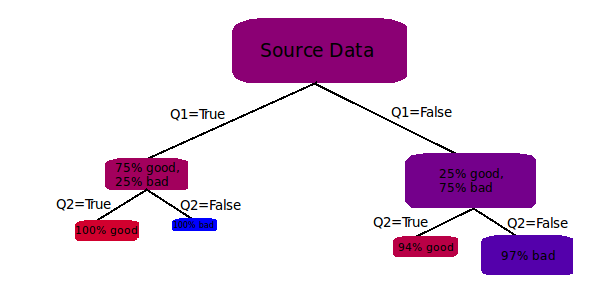
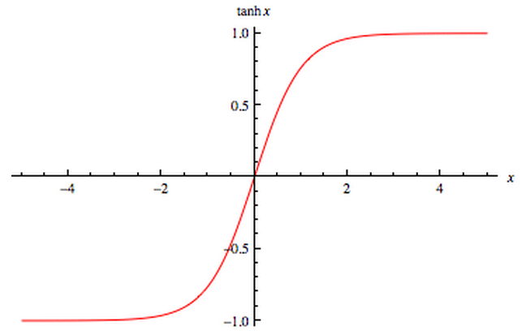

The task of classification is to accurately predict - and preferably also describe - the assignment of labels to objects in a dataset. This can be more formally stated as:
The task of learning a target function $f$ that maps each attribute set $\vec{x}$ to one of the predefined class labels $y$.
[1]
This may involve the generation of models, some of which can be improved over time as new information is made available. Classification models are generated by a variety of learning algorithms, which are trained using datasets that accurately reflect how objects from a particular knowledge domain are assigned class labels.
The typical process of classification proceeds as follows. After data acquisition, preprocessing, and exploration, the analyst is well prepared to select an appropriate classification algorithm based on the nature of the data. The data is then subdivided into a training set which will be used to build the model, and one or more test sets which are used to validate it. Validation is important to ensure that the model is neither under-fitted (doesn't describe the training set well enough to be useful) nor over-fitted (describes the training set better than the test set).
Below are descriptions of several common classification strategies.
This algorithm iteratively probes for the most decisive questions to ask of the objects in any subset of the training data, such that the responses can be used to further subdivide the data into purer subgroups with respect to class labels.
Figure 1. A trivial decision tree showing how asking the right questions can quickly purify the data.
The improvement in class purity along the paths from the root to the leaves is quantitatively measured before each question (attribute test condition) is selected, using one of several possible performance metrics. This ensures that the height of the tree is minimized and the model can make predictions as quickly as possible. Two of the most commonly used metrics are given below.
$$Entropy(t) = -\sum_{i=0}^{c-1}p(i|t)\log_2p(i|t)$$
$$Gini(t) = 1-\sum_{i=0}^{c-1}[p(i|t)]^2$$
$c$: The total number of classes in the training set
$p(i|t)$: The fraction of records belonging to class $i$ in a given node $t$
Another benefit of decision tree classifiers is that the resulting tree structure can be inspected to gain a better understanding of potential causes for a given stone ending up in one pile or another. One practical application of this kind of information is in the improvement of sales operations by informing agents of which questions and cues have been most effective in creating conversions.
This classification scheme is about generating relatively accurate statements of the form $(r_1\wedge r_2\wedge\cdots r_n)\rightarrow y$ where $r_i$ is a rule conjunct asserting the relationship of some object attribute to some value that it can take on, and $y$ represents a class label found in the training set. It's easy to see the similarities between this strategy and decision trees; both use objects that consist entirely of categorical attributes to produce a set of boolean rules describing how best to test those attributes to determine a predefined class value. These approaches also differ in two significant ways. First, generated rulesets cannot be easily interpreted like decision trees can. Second, only one path down a decision tree can be followed to produce a classification, which may not yield a subset of the training data that is completely pure (see Figure 1); yet it is possible for multiple generated rules to match a given object under consideration, which increases the quality of the resulting classification. Therefore it can be said that decision trees offer more descriptive value, while rule based classifiers offer more predictive value.
The actual process of rule generation can be accomplished with the sequential covering algorithm, which generates rules in class-based order. The first task is to decide on the order in which the class labels will be considered, which is usually based on either the cost of misclassification or the prevalence of the class in the training set. Next, a rule-growing subroutine is repeatedly invoked on each class-specific subset $(*)\rightarrow y_k$ of the training data. This subroutine generates rules by either adding conjuncts to an empty rule $()\rightarrow y_k$ or choosing an existing rule from $(*)\rightarrow y_k$ and removing conjuncts from it. The choice to add or remove a conjunct is made by evaluating the resulting rule against a performance metric; this step is analogous to the evaluation of attribute test conditions during the growth of a decision tree. One of the most popular metrics for this purpose is FOIL's information gain:
$$FOIL=p_1\times (log_2\frac{p_1}{p_1+n_1}-log_2\frac{p_0}{p_0+n_0})$$
$p_0$: The number of positive examples covered by the initial rule
$n_0$: The number of negative examples covered by the initial rule
$p_1$: The number of positive examples covered by the new rule
$n_1$: The number of negative examples covered by the new rule
After a rule has been grown, it is added to the list of discovered rules. Next, those training records that are covered by the rule are removed from the training set; this is so that the rule-growing subroutine generates a different rule on the next iteration. Iteration continues until a stopping condition is met, such as the error rate of the rule on the test set exceeding some threshold, as is the case in the RIPPER algorithm [1].
This simple algorithm works by comparing an object that is to be classified ($\vec{z}$) to the entirety of the training set $D$. The result of this comparison is an arbitrary number $k$ of nearest neighbors, which form the nearest neighbors set of $\vec{z}$, symbolized by $D_z$. Finally, a class label is assigned to $z$ based on the class labels found in $D_z$.
This method is different from most classifiers in that classification is based directly on the training set, as opposed to a model of it. In addition to requiring more resources to perform predictions, this algorithm is highly susceptible to noise. The value of $k$ must be carefully chosen so that the class prediction is not influenced too much by the class labels of unrelated items in the training set. A common approach to solving this issue is to weight the influence that each item in $D_z$ has on the class label of $\vec{z}$ by its proximity.
This approach to classification is based on the assumption that there is a probabilistic relationship between attribute sets and the class labels that are assigned to them. It then seeks to model this relationship using as much training data as possible. In the statistical context, the attribute set and class label can be treated as the random variables $\vec{X}=\{X_1,X_2,\cdots,X_n\}$ and $Y$, respectively. Each object from the training set, then, represents a specific outcome from an ever expanding sample space of training records. This is useful because we can estimate $\{P(X_i=x_i|Y=y_j)\}$ by aggregating the (attribute value,class) pairs $(x_i,y_j)$ found in the training data. This estimation is made by counting the instances of each attribute outcome for class $y_j$, and then dividing the result by the total number of outcomes for that class.
The ability to count the outcomes individually implies that there are only a finite number of them. Therefore this algorithm is typically used with categorical data. However if the data are continuous, $\{P(X_i=x_i|Y=y_j)\}$ can instead be estimated by assuming a normal distribution of the attribute values:
$$P(X_i=x_i|Y=y_j)=\frac{1}{\sqrt{2\pi}\sigma_{ij}}e^\frac{-(x_i-\mu_{ij})^2}{2\sigma_{ij}^2}$$
$\mu_{ij}$: The mean value of attribute $i$ that is associated with class $y_j$
$\sigma_{ij}$: The variance of attribute $i$ that is associated with class $y_j$
In order to actually make class predictions given attribute sets, we ultimately need to be able to compute the following:
$$\max_j[P(Y=y_j|\vec{X}=\vec{x})]$$ $\vec{x}$: The attribute set of the object being classified
This is where Bayes' Theorem is used, which states:
$$P(Y|\vec{X})=\frac{P(\vec{X}|Y)\times P(Y)}{P(\vec{X})}$$
By assuming conditional independence among the attributes of $\vec{X}$, we can make the following substitution:
$$P(\vec{X}=\vec{x}|Y=y_j)=\prod_{i=1}^{n}P(X_i=x_i|Y=y_j)$$
Finally, using the fact that $P(\vec{X})$ doesn't change while an individual object is being classified, the denominator in Bayes' Theorem can be ignored, and we have an expression for predicting the class value of new objects based on training data:
$$\max_j[P(Y=y_j)\times \prod_{i=1}^{n}P(X_i=x_i|Y=y_j)]$$
$x_i$: The $i$th attribute of the object being classified
$P(Y=y_j)$: The proportion of objects in the training data with class $y_j$
After all that, it's still just a guess, but it's one that improves in quality with the number of instances used to train the model, which can be continuously streamed to the model. In this way, a Bayesian classifier is able to adapt over time to changing circumstances without need to be rebuilt. This characteristic makes it useful for applications such as Spam Filtering and other forms of content moderation. The algorithm is naïve in that it is based on the assumption of conditional independence between the attributes of the data. However, this can be compensated for in preprocessing by selecting a subset of attributes which have a low pairwise correlation.
The ANN is an innovation spawned from the field of Bioinformatics which mimics the way a brain learns. A typical implementation of an ANN models the structure of an actual neural network as a graph, with nodes serving as neurons, and weighted edges serving as synapses. The structure is further composed of an input layer, an output layer, and one or more hidden layers. The layers are connected by edges which store the knowledge gained by the model in their weights. The strengths of these weights are adjusted based on error signals that are produced when the model is being trained. In order to make a classification prediction, one or more values are fed into the nodes on the input layer, after which the new information is percolated through the rest of the network. During this process the information undergoes various transformations which are determined to a large degree by the strength of the weighted edges connecting the nodes.
In order to increase the ability of the model to encapsulate a complex functional relationship between the input domain and the output range, the information incident to each node in the hidden layers is passed through a sigmoid activation function such as the hyperbolic tangent:
Figure 2. A sigmoid function with horizontal asymptotes to facilitate a tapering off of the learning response. [2]
The model learns by generating an error signal based on the difference between the actual result produced at the output layer and the expected result, which is provided with the input. After the error signal has been fully propagated backward through the network, the weights of the synaptic edges are updated so as to lessen the error in future responses to the same input.
There are numerous ways in which a neural network can be configured. The analyst may choose to use an arbitrary number of nodes in any one layer, and an arbitrary number of hidden layers to compose the network as a whole (although only one hidden layer is usually necessary). This high degree of configurability is both a strength and a weakness of ANNs; it makes them adaptable to almost any pattern recognition task, yet such optimization can be a very time consuming process. Another weakness of ANNs is that they don't offer much descriptive value; it's difficult to extract from the configuration of weights any insight into the nature of the process that generated the data on which the model was trained.
Below are links to an ANN model which was adapted from an implementation by Toby Segaran [3].